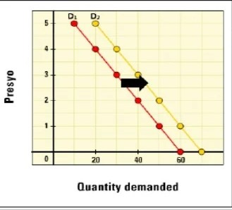
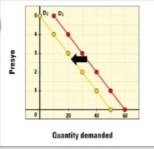

AP-DEMAND
Demand – dami ng produkto o serbisyo na gusto at kayang bilhin ng mga mamimili sa isang takdang panahon at partikular na presyo.
Ang kakayahan at kagustuhan ang mga makamit at bilhin ang isang produkto o serbisyo ang naglalarawan sa konsepto ng pangangailangan at kagustuhan.
Ano ang kahalagahan ng presyo sa demand ng tao?
– Ang presyo ang pangunahing nagtatakda (determinant) sa dami ng demand.
Batas ng Demand
– Kapag tumataas ang presyo, bumababa ang dami ng gusto at kayang bilhin, at kapag bumababa ang presyo, tumataas ang dami ng gusto at kayang bilhin (ceteris paribus).
P = presyo
Qᴰ = quantity demanded
↓P⇒↑QD
↑P⇒↓QD
Ceteris Paribus – nangangahulugang “ipinapalagay na ang presyo lamang ang salik na nagbabago at ang ibang salik ay hindi nagbabago o nakakaapekto sa demand.”
Bakit nagbabago ang presyo(P) at Qᴰ?
1. Substitution Effect
2. Income Effect
Substitution Effect – pagtaas ng presyo, hahanapin ng mas murang alternatibo.
Income Effect – mas mababa ang halaga ng kita kung mas mataas ang presyo.
→ Pagtaas ng presyo, bumababa ang halaga ng pera.
Mathematical Formula
Demand = Kagustuhan + Kakayahan
Demand Schedule – table with demands
Demand Function – mathematical equation for each demand
Qᴰ = a – bP or Qᴰ = f(P)
a = intercept
b = slope
P = presyo
Demand Curve – graph of demand schedule
Mga Salik na Nakaaapekto sa Demand (Non-price Determinant)
1. Kita
2. Populasyon o dami ng mamimili
3. Panlasa
4. Presyo ng magkakaugnay na produkto sa pagkonsumo (complementary at substitute product)
5. Inaasahan ng mga mamimili sa presyo sa hinaharap
6. Panahon o Klima
Paglipat ng Demand Curve
📈 Tumaas ang demand (D↑)

📉 Bumaba ang demand (D↓)
